金银章实机预览
圆牌挂在角色饰物表面。七种原有角色与两种首轮捕食种分别采集正面、饰物斜侧、饰物侧面、背面；下方保留动作、幼体、离身和菜单证据。造型尚待用户确认。验收范围 · 玩法说明 · 漫画与小说依据
离身饰物仍有圆牌
七种均使用实际饰物物品渲染。新增两种捕食种由其最新完整客户端补采，已在本任务逐张目视核对。
伸展过程中的挂接
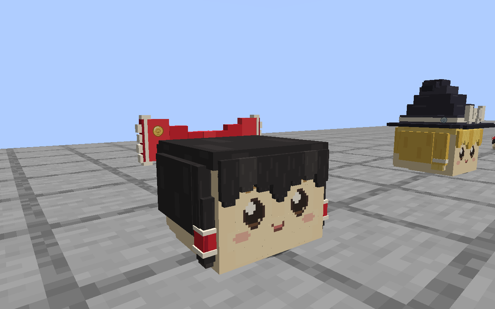
灵梦 · 帧 0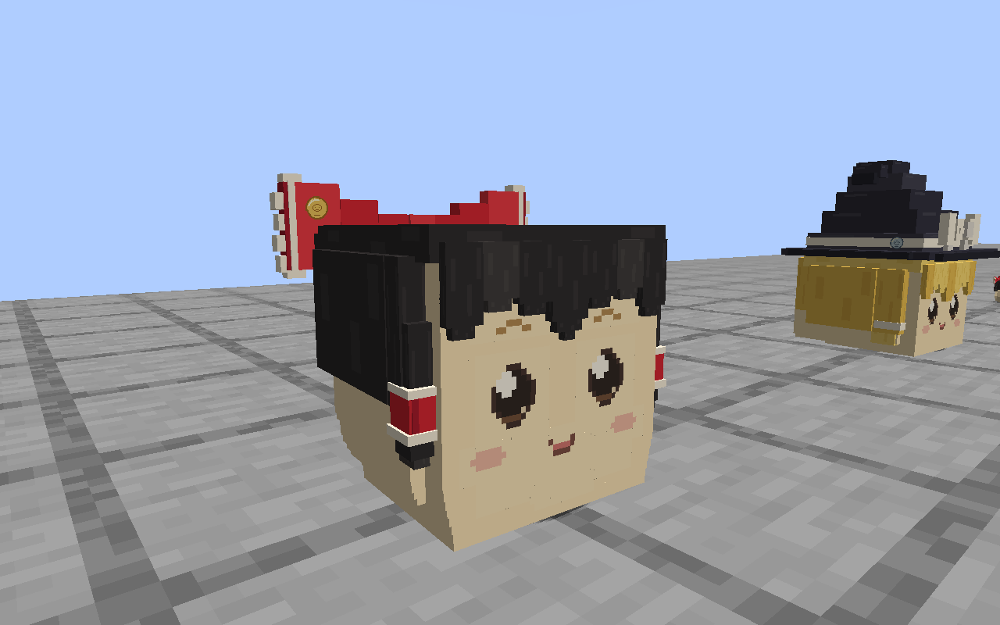
灵梦 · 帧 4 灵梦 · 帧 8
灵梦 · 帧 8 魔理沙 · 帧 0
魔理沙 · 帧 0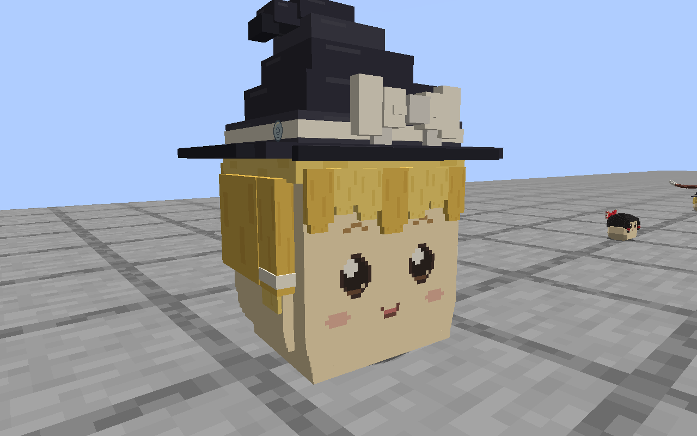
魔理沙 · 帧 4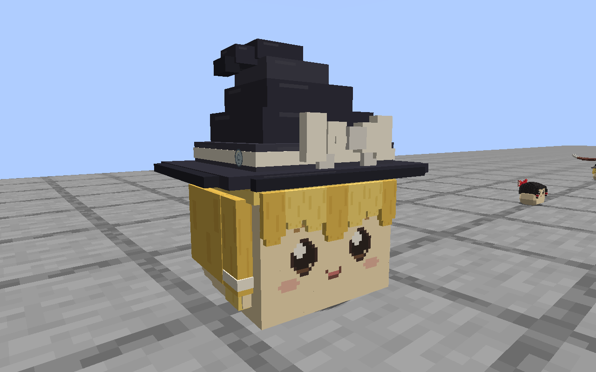
魔理沙 · 帧 8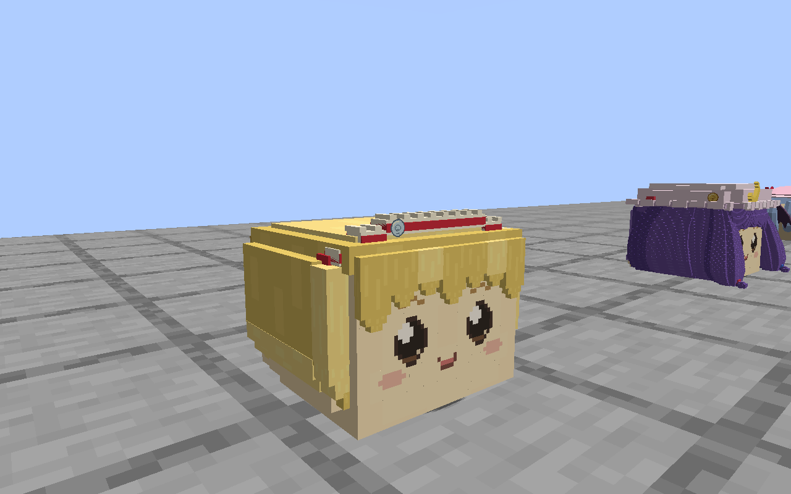
爱丽丝 · 帧 0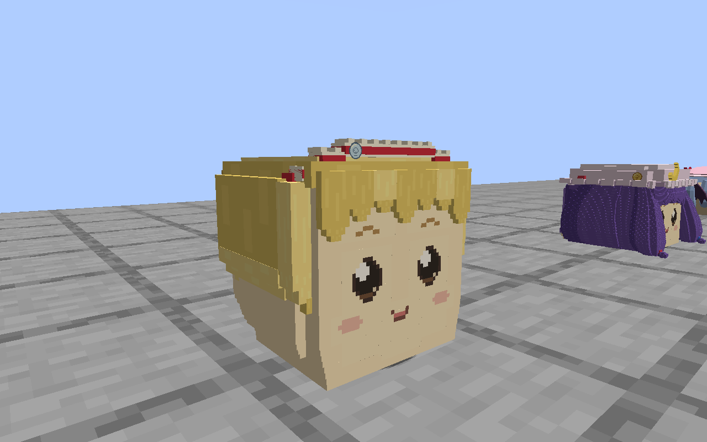
爱丽丝 · 帧 4 爱丽丝 · 帧 8
爱丽丝 · 帧 8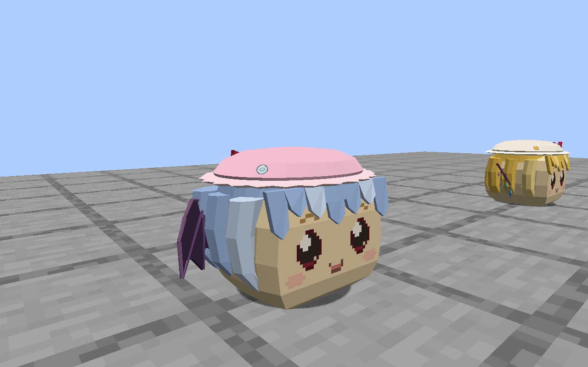
蕾米莉亚 · 帧 0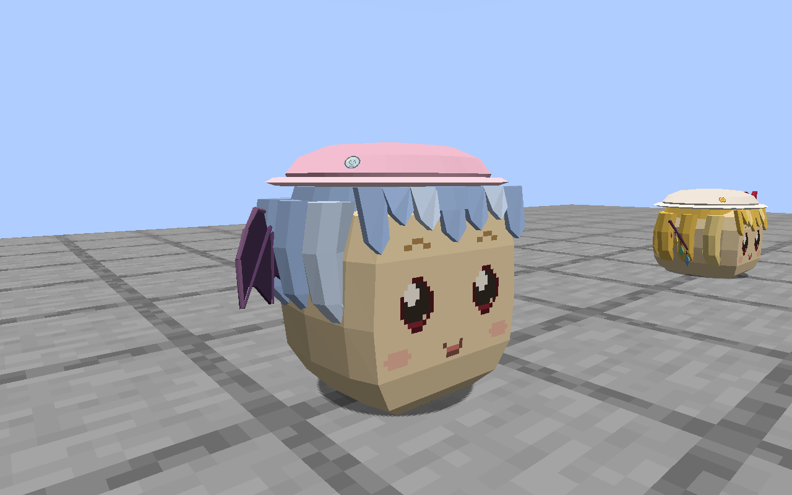
蕾米莉亚 · 帧 4 蕾米莉亚 · 帧 8
蕾米莉亚 · 帧 8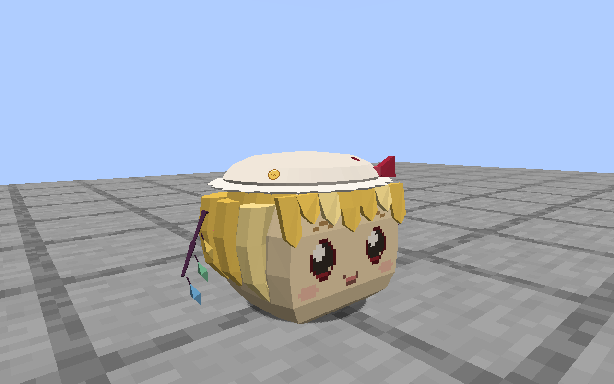
弗兰 · 帧 0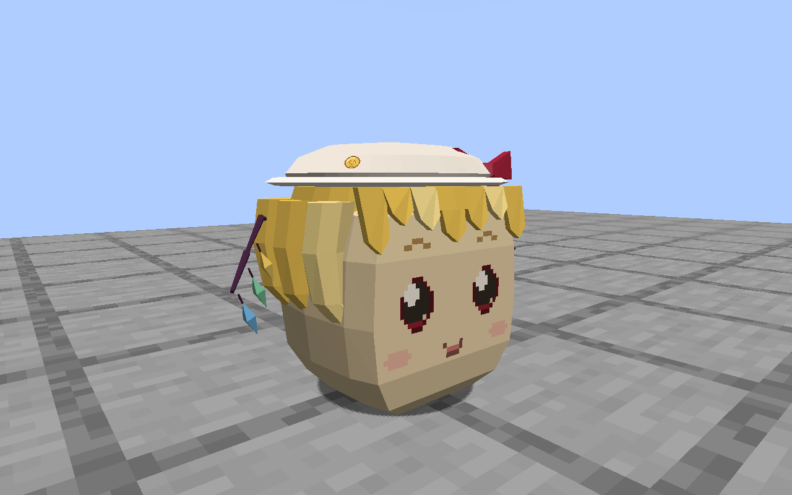
弗兰 · 帧 4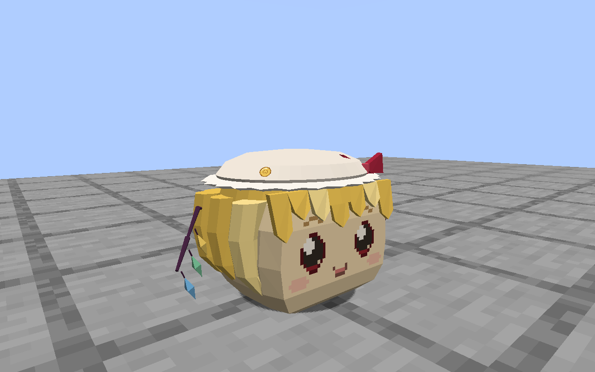
弗兰 · 帧 8幼体与饰物离身
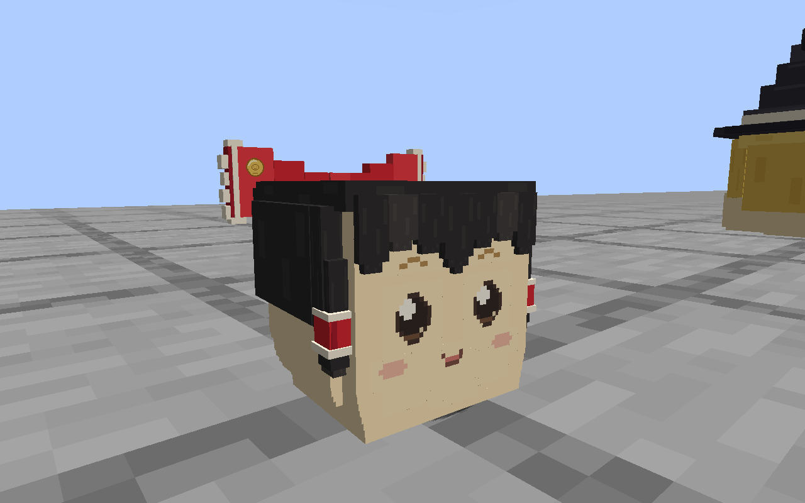
幼体缩放 0.4，徽章随整体缩放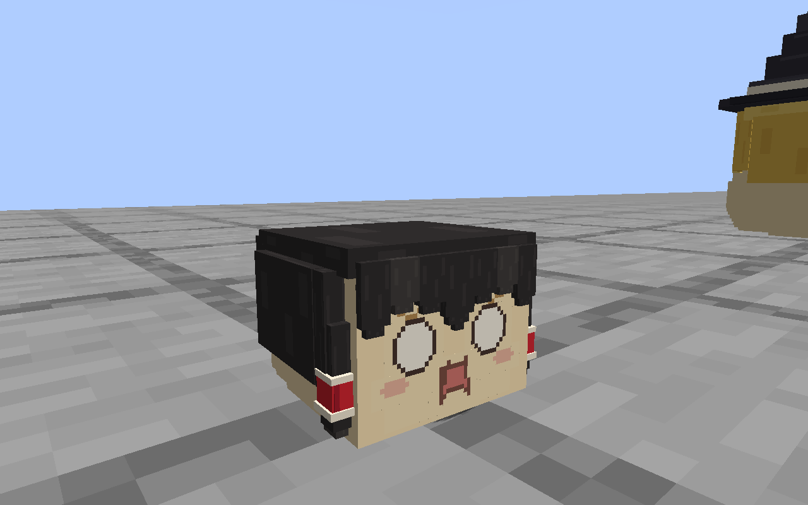
饰物离身后不显示徽章实际档案与考核菜单
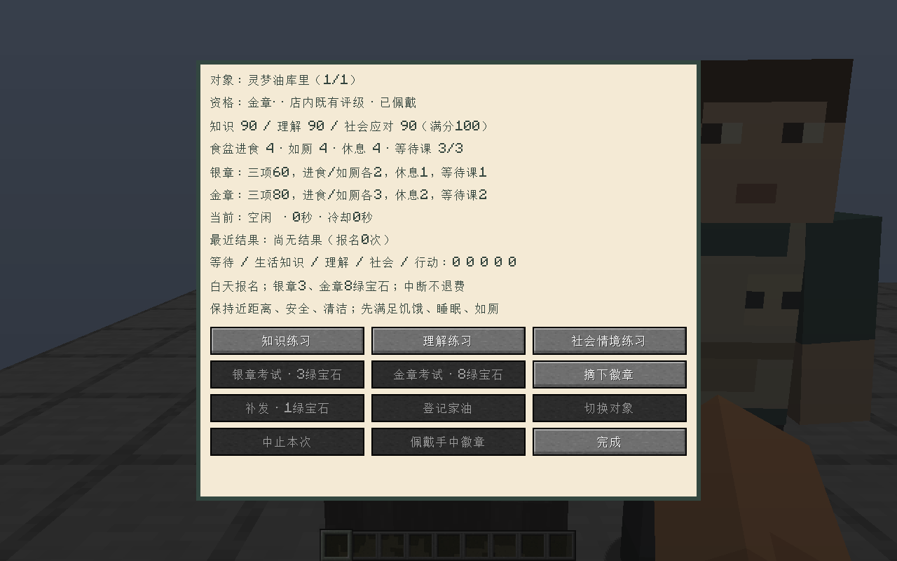